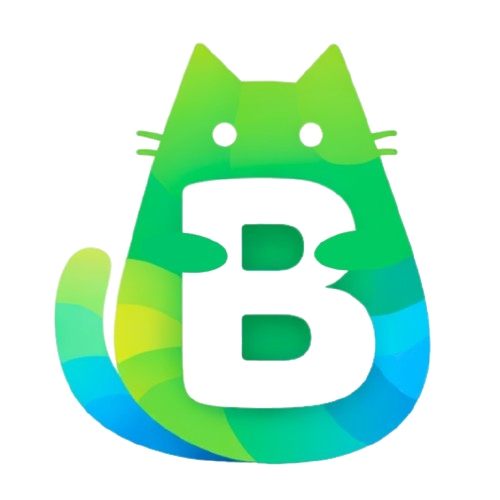

O Bixuco é um aplicativo que auxilia pais no acompanhamento do bem-estar de crianças com hipersensibilidade sensorial (TPS).
Integrado a uma pelúcia com sensores, o app identifica possíveis sinais de estresse a partir das interações da criança e organiza essas informações de forma simples e visual.
Os responsáveis podem registrar o dia da criança, acompanhar relatórios, visualizar gráficos e identificar padrões de comportamento. Também é possível compartilhar esses dados com terapeutas, facilitando o acompanhamento profissional.


A Bixuco é uma startup de tecnologia focada no bem-estar infantil, criada para ajudar famílias a compreender melhor crianças com hipersensibilidade sensorial. A empresa une uma pelúcia sensorizada com plataformas digitais, oferecendo uma solução completa para acompanhamento do comportamento infantil. Seu objetivo é melhorar a comunicação entre crianças e responsáveis, promovendo mais segurança e qualidade de vida, sem substituir o acompanhamento profissional.